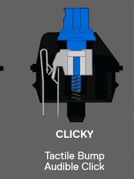
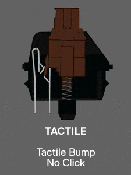
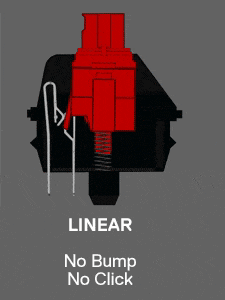

청축

청축
청축은 딸깍소리가 나며 키압이 높아 장시간 타이핑할경우 손이 아프다는 단점이 있다.
장점은 딸깍 소리가나 기분이 좋아진다.
갈축

갈축
갈축은 적축과 청축 사이에있는 스위치로
청축과 적축을 둘다 즐기고 싶다면 갈축을 선택하는것이 좋을것이다.
적축

적축☑
적축은 소리도 작고 서걱거리는 소리가많아 부드러운타이핑과 깔끔한 타이핑을 원한다면 적축을 선택하면 될것 입니다.
적축은 키압도 낮아 장시간 타이핑해도 손이 안아프고
키압이 낮은점이 너무쉽게 눌러지므로 게임할때 단점이 될수도 있습니다.